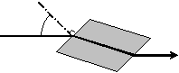
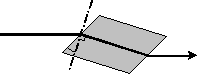
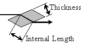

LaserCanvas 5 > Optics >
LaserCanvas provides three different forms of refractive elements. These are equivalent except for the respective definitions of incidence angle.
Each refractive element comprises at least two "optics:" An entrance face, and an exit face. The faces are linked to each other, so that deleting one also deletes the other.
Within a refractive element, there can be at most one Thermal Lens or one Screen optic. These optics are automatically centred within the refractive element thickness.
To insert a plate, select menu Edit | Insert | Insert Plate or click the
To insert a Brewster-angled plate, select menu Edit | Insert | Insert Brewster or click the
To insert a crystal, select menu Edit | Insert | Insert Crystal or click the
Specifies the radius of curvature of the entrance or exit faces of the refractive elements, in units of mm (
If the Astigmatic option is checked, then separate values can be entered for the radius of curvature in the sagittal and tangential planes.
Limits: -90 < external angle < 90.
For refractive Plate optics, specifies the external angle of incidence that the ray makes to the entrance face normal, in units of degrees. A positive angle means that the normal to the entrance face surface is rotated clockwise from the input ray.
For Crystal optics, specifies the angle within the material between the entrance face normal and the refracted beam, in units of degrees. A positive angle means that the normal to the entrance face surface is rotated clockwise to the internally refracted ray.
The insertion angle of a Brewster Plate is calculated from its refractive index.
| Face Angle Definition | |
|  |  |
| Plate | Crystal |
The Face Angle is, by definition, a rotation in the tangential plane. The angle of the exit face is equal and opposite to that of the entrance face.
This property is not available for exit faces.
This property is not available for Brewster Plate optics.
Limit: > 1.
Specifies the refractive index of the material. For Brewster Plate optics, this determines the incidence and refraction angles at the interfaces.
This property is not available for exit faces.
Limit: > 0.
Specifies the thickness, or crystal length, of the refractive element. If the element contains an internal Thermal Lens or Screen, they are automatically centred within the element.

The actual distance traversed within the element may be larger than the optic thickness. The thickness is to be interpreted as the distance between the parallel faces of the element. The internal distance travelled will be larger for non-normal incidence due to refraction.
This property is not available for exit faces.
For Brewster plates, the Flip toggle command inverts the sense of the Brewster angle. It is equivalent to a negative Brewster angle.
This property is not available for exit faces.
Checking the Astigmatic box allows separate sagittal and tangential values to be entered for the refractive element face’s Radius Curvature property.